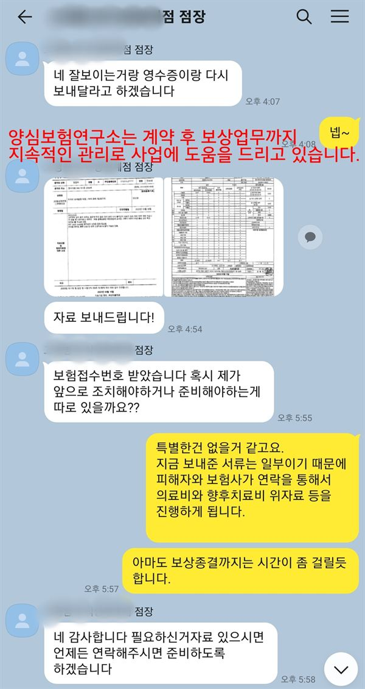

인천은 구 이름부터 새로 확인합니다. 노영규 대표는 개편 뒤 바뀐 주소가 계약서에 제대로 적혔는지 보고, 섬 지역이면 소방차가 닿는 시간을, 구도심이면 건물 준공 연도를 먼저 봅니다.
인천 안내
인천, 왜 병원화재보험이 중요할까요?
인천병원화재보험은 인천광역시 병의원과 요양·정신병원의 시설, 장비, 약품에 생길 화재 손해와 환자·이웃에 대한 배상책임을 함께 준비하는 보험을 이릅니다. 인천은 2026년 7월 1일 31년 만에 행정체제를 개편해 2군 8구에서 2군 9구가 됐습니다.
옛 중구 내륙과 동구가 합쳐져 제물포구가, 옛 중구의 섬 지역이 영종구가 됐습니다. 옛 서구는 남·북으로 나뉘어 남쪽은 주민 여론조사를 거쳐 서해구, 북쪽은 검단구라는 이름을 달았습니다. 병원 입장에서는 같은 자리에 있어도 주소가 바뀐 곳이 많아, 보험 계약서와 사업자 서류의 소재지를 새 이름으로 맞춰야 합니다.
구마다 의료 환경도 다릅니다. 제물포구는 개항기부터 이어진 구도심이라 오래된 건물 속 의원과 병원이 많고, 검단구는 신도시 상가에 새 의원이 들어서는 중입니다. 영종구는 공항이 있는 섬 지역인데 약 13만 명이 살면서도 종합병원이 없어, 응급 환자가 40분에서 1시간을 이동해야 한다는 보도가 이어졌습니다.
계양구, 부평구 같은 기존 주거지에는 입원 병상을 둔 정신건강의학과 병원과 요양병원이 있습니다. 2025년 10월 계양구 작전동에서는 정신병원이 입주한 5층 건물에서 불이 나 117명이 대피했습니다. 문을 잠그는 병동이 있는 병원은 대피 절차가 더 까다롭습니다.
2025.10 계양구 작전동 지하 1층, 지상 5층 정신병원 건물 5층 주방 쪽에서 불이 나 입원 환자 등 117명이 대피하고 직원 3명이 연기를 마셨습니다. 약 31분 만에 꺼졌습니다. (전국매일신문)
주요 위험
인천병원화재보험에서 먼저 볼 위험
잠금 병동의 대피
출입을 통제하는 정신병원 병동은 문을 여는 순서가 늦어지면 환자 부상 배상으로 이어질 수 있습니다.
섬 지역의 먼 이송 거리
영종구는 큰 병원까지 거리가 멀어 대피한 입원 환자를 옮기는 시간과 비용을 함께 봅니다.
제물포구 구도심의 낡은 건물
준공 연도가 오래된 건물은 배선과 방화문 상태가 제각각이라 건물 점검 결과를 먼저 봅니다.
검단 신축 상가의 연쇄 공사
입주가 이어지는 신도시 상가는 다른 호실 인테리어 공사의 불티가 가장 가까운 위험입니다.
병원 안 주방과 조리실
입원 환자 식사를 만드는 주방은 기름과 가스를 쓰므로 후드와 덕트 청소 주기를 확인합니다.
주소 변경 뒤 서류 공백
개편으로 바뀐 소재지가 계약서에 반영되지 않으면 사고 뒤 확인 절차가 번거로워질 수 있습니다.
※ 실제 보장 여부와 한도, 면책 사항은 가입하는 상품의 약관과 병원 현황에 따라 달라집니다.
방문 상담
인천 직접 방문 상담
제물포구, 영종구, 서해구, 검단구와 계양·부평·남동·연수 등 인천 전역의 병원을 찾아갑니다. 새 주소가 적힌 서류와 건물 도면을 함께 확인합니다.
꼭 확인할 점검 항목
인천병원화재보험 점검 리스트
- 계약서의 새 구 이름옛 중구·동구·서구 주소로 된 보험 서류는 개편된 구 이름으로 고쳐 둡니다.
- 잠금 병동 개방 절차화재 때 누가 어떤 순서로 문을 여는지 적어 두고 훈련 기록을 남깁니다.
- 환자 이송 협력 병원섬 지역이라면 대피 뒤 환자를 받아 줄 육지 병원을 미리 정해 둡니다.
- 주방 덕트 청소 기록환자 급식을 하는 병원은 덕트 청소 날짜와 업체를 기록합니다.
- 건물 준공 연도구도심 병원은 준공 연도와 최근 전기 안전 점검 결과를 챙겨 둡니다.
고객 후기
실제 계약고객 만족 사례




※ 실제 계약고객과 나눈 카카오톡 상담과 후기 일부이며, 개인정보는 가렸습니다.
지역 상담 Q&A
인천병원화재보험 Q&A
행정구역이 바뀌었는데 기존 보험은 그대로 유효한가요?
건물 위치가 그대로라면 계약이 무효가 되지는 않습니다. 다만 소재지 표기를 새 구 이름으로 고쳐 두어야 사고 때 확인이 빠릅니다.
정신건강의학과 병원은 일반 병원과 무엇이 다른가요?
잠금 병동과 환자 특성 때문에 대피가 어렵고 배상책임 문제가 커질 수 있습니다. 병상 수와 병동 구조를 알려 주시면 그에 맞춰 설계합니다.
영종구에서 개원하려는데 따로 볼 점이 있나요?
큰 병원이 멀어 처치 장비를 더 갖추는 경우가 많아 장비 가입금액이 커질 수 있습니다. 소방서까지의 거리와 건물 소방 설비도 함께 확인합니다.
제물포구 오래된 건물의 병원을 검단으로 옮기면 무엇이 바뀌나요?
건물 구조와 준공 연도가 달라져 위험 평가가 새로 이뤄집니다. 이전 날짜에 맞춰 옛 건물과 새 건물의 보장이 끊기지 않도록 정리합니다.
인천 병원, 새 구 이름으로
계약서 고치셨나요?
개편된 주소와 건물 나이, 병동 구조까지 함께 보고 인천 병원 보험을 정리해 드립니다.